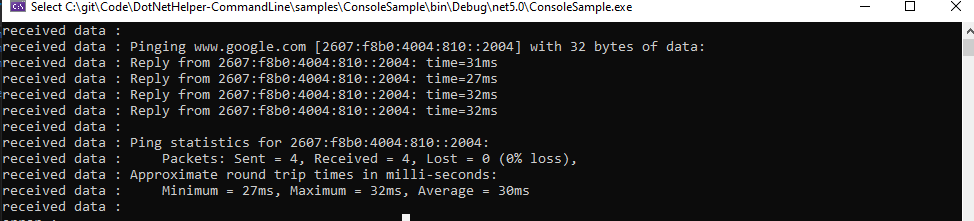

A command-line helper class that makes it easy to run commands. This library also comes with commonly used command see api docs for examples
static void Main(string[] args)
{
var cmd = new CommandPrompt();
cmd.RunCommand(UnixCommands.Ping("www.google.com"), null, OnDataReceived, ErrorDataReceived, Exited);
cmd.RunCommand(UnixCommands.Ping("This is not a valid command"), null, OnDataReceived, ErrorDataReceived, Exited);
Console.ReadLine();
}
private static void Exited(object sender, EventArgs e)
{
Console.WriteLine("command has finished.");
}
private static void ErrorDataReceived(object sender, DataReceivedEventArgs e)
{
Console.WriteLine("error : " + e.Data);
}
private static void OnDataReceived(object sender, DataReceivedEventArgs args)
{
Console.WriteLine("received data : " + args.Data);
}
}

NET452
NETSTANDARD2.0